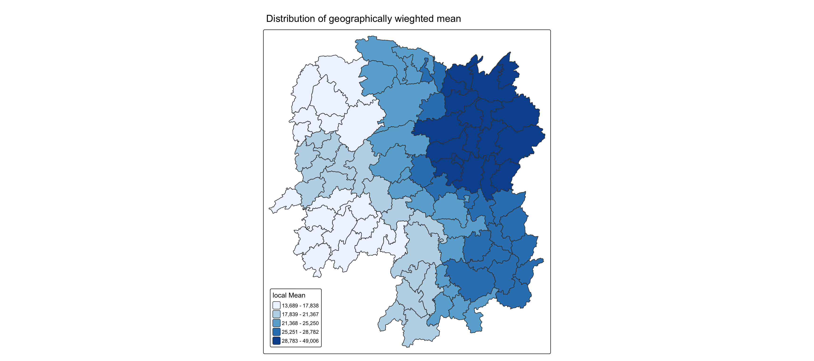

pacman::p_load(sf,ggstatsplot,tmap,tidyverse,knitr,GWmodel)in-class_Ex04
0.1 Import shapefile into r environment
The import paths below point to this exercise’s data folder. The course paths are shown immediately before each local import.
hunan_sf <- st_read(dsn = "chap08/data/geospatial",
layer = "Hunan")hunan_sf <- st_read(dsn = "data/geospatial",
layer = "Hunan",
quiet = TRUE)0.2 Import csv file into r environment
hunan2012 <- read_csv("chap08/data/aspatial/Hunan_2012.csv")hunan2012 <- read_csv("data/aspatial/Hunan_2012.csv")0.3 Joining hunan and hunan_2012
hunan_sf <- left_join(hunan_sf,hunan2012) %>%
select(1:3, 7, 15, 16, 31, 32)0.4 Mapping GDPPC
basemap <- tm_shape(hunan_sf) +
tm_polygons() +
tm_text("NAME_3", size=0.5)
gdppc <- qtm(hunan_sf, "GDPPC") +
tm_layout(
legend.position = c("left", "bottom"))
tmap_arrange(basemap, gdppc, asp=1, ncol=2)
0.5 Converting to SpatialPolygonDataFrame
hunan_sp <- hunan_sf %>%
as_Spatial()0.6 Geographically Weighted Summary Statistics(GSWW) with adaptive bandwidth
0.6.1 Determine adaptive bandwidth
Cross-validation
bw_CV <- bw.gwr(GDPPC ~ 1,
data = hunan_sp,
approach = "CV",
adaptive = TRUE,
kernel = "bisquare",
longlat = T)Adaptive bandwidth: 62 CV score: 15515442343
Adaptive bandwidth: 46 CV score: 14937956887
Adaptive bandwidth: 36 CV score: 14408561608
Adaptive bandwidth: 29 CV score: 14198527496
Adaptive bandwidth: 26 CV score: 13898800611
Adaptive bandwidth: 22 CV score: 13662299974
Adaptive bandwidth: 22 CV score: 13662299974
TipMy observation
For the adaptive bandwidth, the cross-validation (CV) procedure tests different numbers of nearest neighbours and compares their CV scores. The optimal bandwidth is the one that produces the minimum CV score. In our case, the selected adaptive bandwidth is 22. This means that for each location, the model uses its 22 nearest neighbours when calculating the local statistics. Since the bandwidth is adaptive, the actual geographical distance covered can vary from one location to another. In densely populated areas, the 22 neighbours may be relatively close, while in more dispersed areas, the model may need to search over a larger distance.
0.6.2 Determine fixed bandwidth
bw_CV <- bw.gwr(GDPPC ~ 1,
data = hunan_sp,
approach = "CV",
adaptive = FALSE,
kernel = "bisquare",
longlat = T)Fixed bandwidth: 357.4897 CV score: 16265191728
Fixed bandwidth: 220.985 CV score: 14954930931
Fixed bandwidth: 136.6204 CV score: 14134185837
Fixed bandwidth: 84.48025 CV score: 13693362460
Fixed bandwidth: 52.25585 CV score: Inf
Fixed bandwidth: 104.396 CV score: 13891052305
Fixed bandwidth: 72.17162 CV score: 13577893677
Fixed bandwidth: 64.56447 CV score: 14681160609
Fixed bandwidth: 76.8731 CV score: 13444716890
Fixed bandwidth: 79.77877 CV score: 13503296834
Fixed bandwidth: 75.07729 CV score: 13452450771
Fixed bandwidth: 77.98296 CV score: 13457916138
Fixed bandwidth: 76.18716 CV score: 13442911302
Fixed bandwidth: 75.76323 CV score: 13444600639
Fixed bandwidth: 76.44916 CV score: 13442994078
Fixed bandwidth: 76.02523 CV score: 13443285248
Fixed bandwidth: 76.28724 CV score: 13442844774
Fixed bandwidth: 76.34909 CV score: 13442864995
Fixed bandwidth: 76.24901 CV score: 13442855596
Fixed bandwidth: 76.31086 CV score: 13442847019
Fixed bandwidth: 76.27264 CV score: 13442846793
Fixed bandwidth: 76.29626 CV score: 13442844829
Fixed bandwidth: 76.28166 CV score: 13442845238
Fixed bandwidth: 76.29068 CV score: 13442844678
Fixed bandwidth: 76.29281 CV score: 13442844691
Fixed bandwidth: 76.28937 CV score: 13442844698
Fixed bandwidth: 76.2915 CV score: 13442844676
Fixed bandwidth: 76.292 CV score: 13442844679
Fixed bandwidth: 76.29119 CV score: 13442844676
Fixed bandwidth: 76.29099 CV score: 13442844676
Fixed bandwidth: 76.29131 CV score: 13442844676
Fixed bandwidth: 76.29138 CV score: 13442844676
Fixed bandwidth: 76.29126 CV score: 13442844676
Fixed bandwidth: 76.29123 CV score: 13442844676
TipMy observation
For the fixed bandwidth, the bandwidth is defined by geographical distance rather than by a fixed number of neighbours. Since longlat = TRUE, the distance is calculated based on longitude and latitude coordinates and is expressed in kilometres. During the cross-validation process, some very small bandwidth values may produce an infinite (Inf) CV score because there are not enough neighbouring observations receiving sufficient weights for a stable local estimation. The algorithm therefore continues testing other bandwidth values and selects the distance that gives the lowest valid CV score. Compared with the adaptive bandwidth, the fixed bandwidth keeps the same geographical search distance for every location, although the number of observations included may vary across space.
bw_CV[1] 76.29126AICc
bw_AIC <- bw.gwr(GDPPC ~ 1,
data = hunan_sp,
approach = "AICc",
adaptive = TRUE,
kernel = "bisquare",
longlat = T)Adaptive bandwidth (number of nearest neighbours): 62 AICc value: 1923.156
Adaptive bandwidth (number of nearest neighbours): 46 AICc value: 1920.469
Adaptive bandwidth (number of nearest neighbours): 36 AICc value: 1917.324
Adaptive bandwidth (number of nearest neighbours): 29 AICc value: 1916.661
Adaptive bandwidth (number of nearest neighbours): 26 AICc value: 1914.897
Adaptive bandwidth (number of nearest neighbours): 22 AICc value: 1914.045
Adaptive bandwidth (number of nearest neighbours): 22 AICc value: 1914.045 bw_AIC[1] 220.7 Computing geographically weighted summary statistics
The code chunk below computes geographically weighted summary statistics by using gwss () of GWmodel package. The analysis is performed using adaptive distance weighted. The distance is derived using AlC method and the kernel method used is bisquare.
gwstat <- gwss(data = hunan_sp,
vars = "GDPPC",
bw = bw_AIC,
kernel = "bisquare",
quantile = TRUE,
adaptive = TRUE,
longlat = T)Note gwss support five kernel methods, namely gaussian, exponential, bisquare, tricube, and boxcar. Repeat the code chunk above with different kernel methods and compare their results visually.
0.8 Preparing the output data
Code chunk below is used to extract SDF data table from gwss object output from gwss() fro subsequent geovilisation. It will be converted into data.frame by using as.data.frame().
gwstat_df <- as.data.frame(gwstat$SDF)Next,cbind() is used to append the newly derived data.frame onto hunan_sf sf data.frame.
hunan_gstat <- cbind(hunan_sf, gwstat_df)0.9 Visualising geographically weighted summary statistics
tm_shape(hunan_gstat) +
tm_polygons(fill = "GDPPC_LM",
fill.scale = tm_scale_intervals(
style = "quantile",
n = 5,
values = "brewer.blues"),
fill.legend = tm_legend(
title = "local Mean")) +
tm_borders(fill_alpha = 0.5) +
tm_title("Distribution of geographically wieghted mean") +
tm_layout(legend.position = c("left", "bottom"))